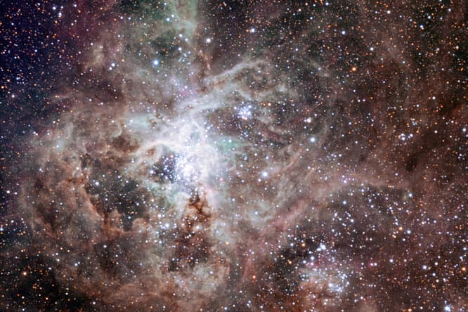
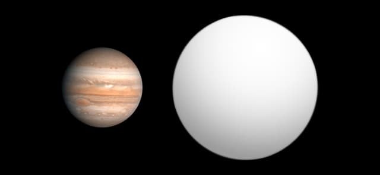
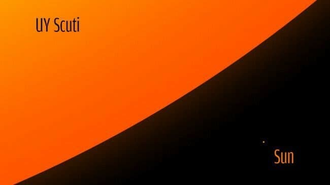
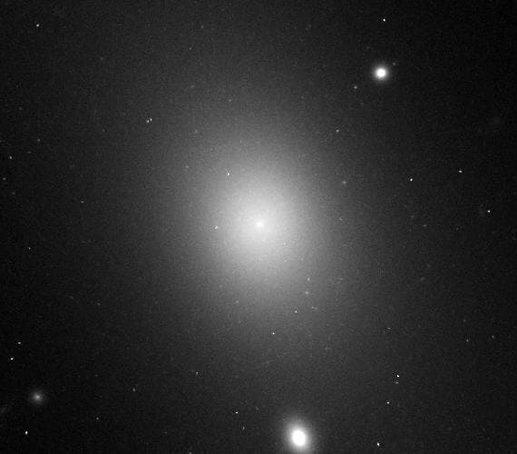

Наш Всесвіт
Наш Всесвіт річ сама по собі не маленька, але і в ньому повно воістину гігантських об’єктів. Планети, зірки, галактики і скупчення галактик – все це буває настільки величезних розмірів, що порівняно з ними наша Сонячна система з її вісьмома планетами – дрібна комашка у величезному лісі.“Цікавості” підібрали п’ятірку рекордсменів у різних космічних категоріях.
-
Найбільша екзопланета: GQ Lupi b
Загадковий об’єкт GQ Lupi b, який розташований на відстані приблизно 500 світлових років від Сонця, вчені виявили 2005 року за допомогою VLT телескопа (Very Large Telescope) у Паранальській обсерваторії, що в Чилі. Виявити-то вони його виявили, а що робити з ним, зрозуміли далеко не відразу. Проблема в тому, що GQ Lupi b перебуває на орбіті приблизно в два з половиною рази далі, ніж Плутон від Сонця, і здається чи то планетою, чи то коричневим карликом (по суті маленькою зіркою). Ясності немає і донині, але більшість астрономів схильні вважати GQ Lupi b екзопланетою (планетою, яка перебуває поза Сонячною системою) . У небесного тіла радіус приблизно в 3,5 раза більший за радіус Юпітера – найбільшої планети в нашій системі, яка більша за Землю в 11,2 раза, – отже, якщо це екзопланета, то вона найбільша з коли-небудь знайдених.
-
Найбільша зірка: UY Scuti
Ми звикли думати, що наше Сонце неймовірних розмірів. І це так, якщо порівняти його із Землею: радіус нашої зірки в 109 разів більший за земний і дорівнює 696 000 кілометрів. Тепер помножте цю величину на 1 708, і ви отримаєте радіус UY Scuti, зірки в сузір’ї Щита, до якої від нас “всього-то” 9 500 світлових років. Ба більше, на піку пульсацій, який становить приблизно 740 днів, радіус цього небесного тіла може досягати 1 900 радіусів Сонця – ось вже точно здоровань. Для порівняння: об’єм UY Scuti приблизно в п’ять мільярдів разів більший за об’єм Сонця, а якби її хтось розмістив у центрі нашої Сонячної системи, то край зірки простягався б трохи далі орбіти Юпітера. Газ і пил, що виходять від неї, розлетілися б ще далі, за орбіту Плутона або на відстань, приблизно в 400 разів більшу за відстань від Землі до Сонця. UY Scuti не тільки найбільша з відомих нині зірок, але одна з найяскравіших, а також найшвидше спалювана зірка.
-
Найбільша туманність: NGC 2070

Туманність NGC 2070, яку також називають “Тарантул”, є найбільшою з відомих туманностей. Вона належить галактиці-супутнику Чумацького шляху – Великій Магеллановій хмарі, до неї від нас 170 000 світлових років. “Тарантул” справжній розплідник небесних тіл: у його хмарах газу та пилу народжуються молоді зірки. Деякі з них вибухнули надновими, внаслідок чого бульбашки були підсвічені рентгенівським випромінюванням. У центрі туманності розташований такий собі космічний пологовий будинок – невелике скупчення зірок R136, чий вік оцінюють приблизно у два мільйони років.
-
Найбільша галактика: IC 1101
За мірками спіральних галактик наш Чумацький шлях розмірами не вражає: 100 000 світлових років від краю до краю – середній розмір. Інша справа IC 1101 – надгігантська еліптична галактика в центрі скупчення галактик Abell 2029. Ця воістину космічна велич розміром у шість мільйонів світлових років. Вона в 60 разів більша і в 2 000 разів масивніша за Чумацький шлях. Якби IC 1101 перебувала на місці нашої галактики, вона б поглинула Велику і Малу Магелланову хмари, туманність Андромеди і галактику Трикутника. IC 1101 утворилася внаслідок зіткнення галактик розміром із Чумацький шлях і туманність Андромеди.
-
Найбільша структура: Велика стіна Геркулес – Північна Корона

Найбільші планети, зірки і галактики – справа, звісно, хороша, а як щодо чогось реально величезного? Зустрічайте Велику стіну Геркулес – Північна корона. Це величезна плоска суперструктура з галактик розміром понад десять мільярдів світлових років, що становить близько 10% від діаметра всього Всесвіту. Найбільша структура була відкрита в листопаді 2013 року за результатами спостережень за спалахами гамма-випромінювання, теоретично вона може містити мільярди галактик.